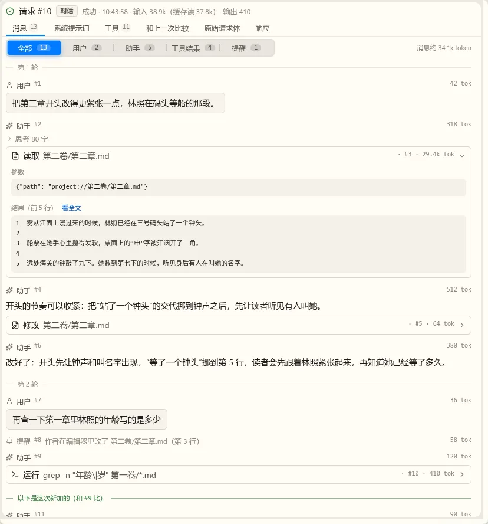
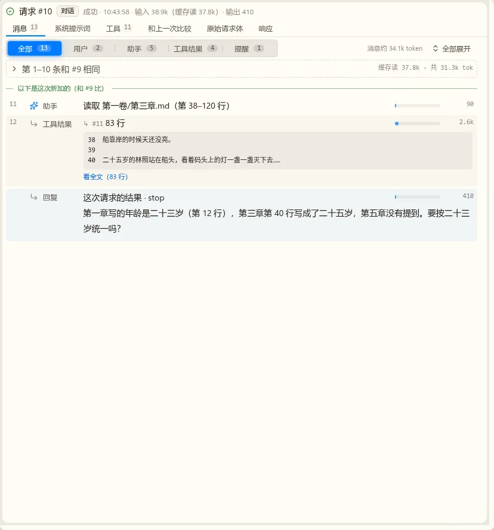
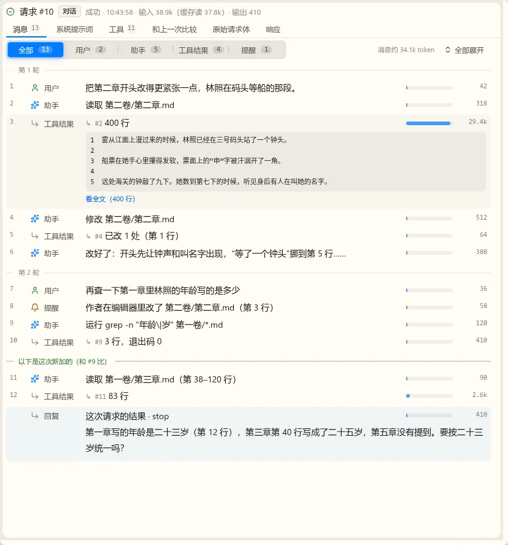
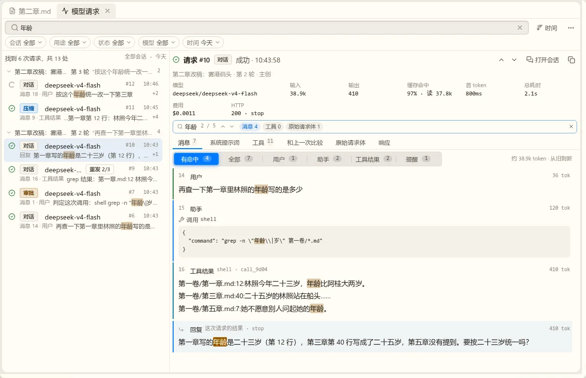
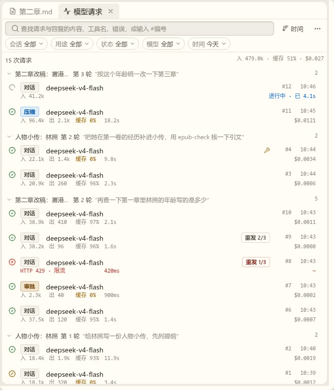
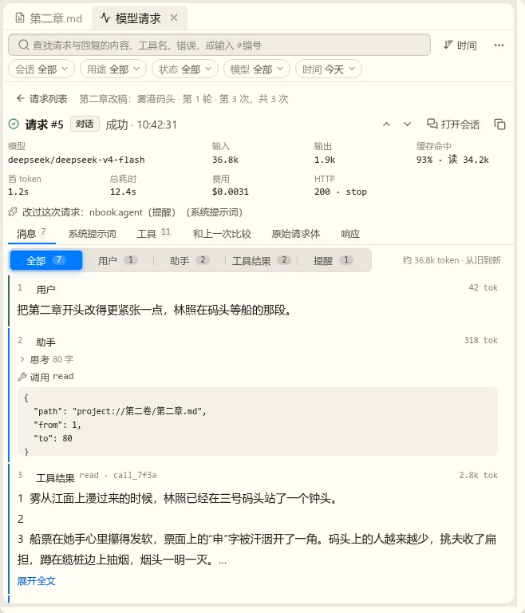

t30 模型请求：第 2 轮
详情的“消息”页照对话的样子读，还是一条消息一行的大纲？
推荐 B 大纲：一次请求常有几十条消息，大纲一屏看完结构和 token 花在哪；和上一次相同的部分收成一行，先看到这次新加的。要读全文时点那一行，在原地展开。
A 照对话的样子

读起来同对话视图；几十条消息时要翻好几屏，看不出哪条最占 token。
B 大纲


上图是打开时的样子，下图是点开前缀后。每行：序号、角色、预览（工具调用写成“读取 第二卷/第二章.md”，结果写“↳ #2 400 行”）、token 条。
- 两种都做的：按轮次分段；“以下是这次新加的（和 #9 比）”一条分隔线；工具结果标出是哪一条调用的；回复放在最后。
- 上面的按角色筛选、查找时的“有命中”照第 1 轮。
已定（第 1 轮）
- 筛选条件常驻一行：会话、用途、状态、模型、时间，各一个下拉，选了的高亮、带 ×（决定 9）
- 编辑区窄时列表与详情来回切换；详情里上下箭头换请求，宽了自动回到左右分开（决定 10）
- 整页照第 1 轮，消息页的展示在本轮重做（决定 11）
- 编辑区的一页；从命令面板、对话顶栏菜单（只看本会话）、回复上的“查看这次请求”打开（决定 3）
- 列表每条两行，按会话的轮次分组；概览常驻详情顶部，六页；开着时新请求自动进列表顶部（决定 4 到 7）
- 全文查找：列表换成命中片段，详情里查找条逐处跳；排序按时间、耗时、输入 token、费用（决定 8）
- 组件放进 nb-agent-ui（决定 2）
第 1 轮的图
整页

查找

和上一次比较

窄的时候来回切换

